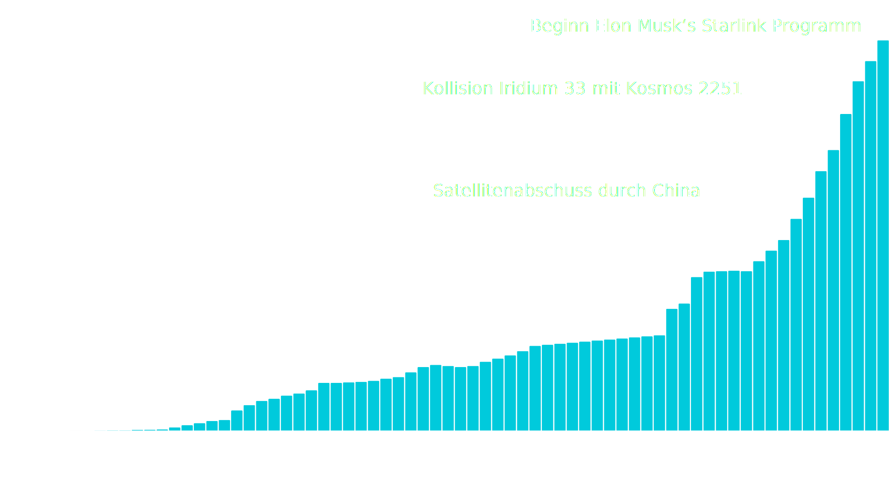

In den letzten Jahre hat die Zahl der erfassten Objekte im Orbit stark zugenommen. Das liegt vor allem am Aufbau der Starlink Konstellation von Elon Musk's SpaceX, welche mittlerweile fast 7000 Satelliten umfasst. Im Diagram lässt sich außerdem die Sprunghafte Zunahme von Objekten nach Kollisionen erkennen.
